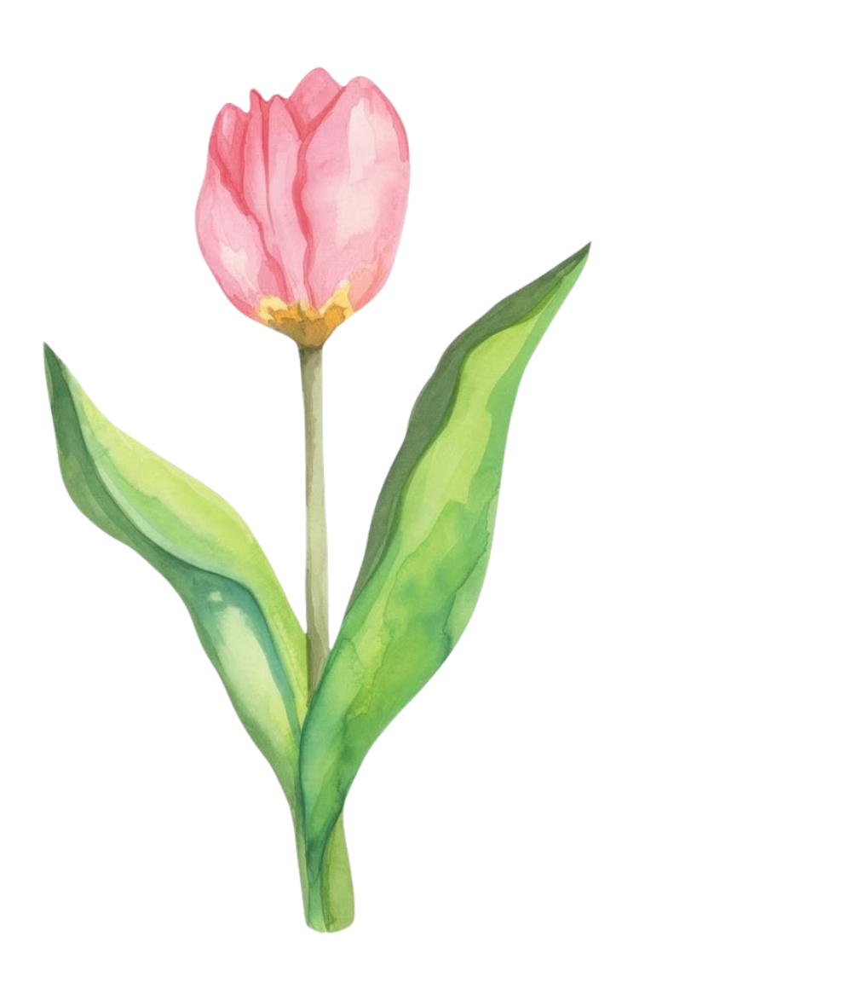

To my dearest Shua,
and her writer.
May this new chapter of your life bring you more beautiful things than you ever expected. I hope you find new reasons to be excited every day, new people who make the journey a little warmer, and new moments that make you realize just how far you’ve come.
I hope the days ahead are kind to you. May every opportunity that comes your way lead you closer to the life you’ve been working so hard for. May your efforts pay off, your little victories feel worth celebrating, and the things that once felt impossible slowly become things you can finally call yours.
There will probably be days when things don’t go exactly as planned, and when they do, I hope you remember that you don’t need to figure it out at once. Take your time. Learn as you go. Make mistakes, start over when you need to, and never be too hard on yourself for not knowing what comes next.
I hope you keep finding the courage to choose yourself, the patience to grow at your own pace, and the strength to keep going even when the road gets a little difficult. And whenever you start doubting yourself, I hope you look back and remember all the things you once thought you couldn’t do, and yet, somehow, you did.
And above all, always remember that God is in control. You may not always understand why certain things happen or where this new road will take you, but trust that He knows the way and He is with you. Keep doing your best, keep your heart open, and let Him take care of the things that are beyond your hands.
So, here’s a small gesture from me to your brand new beginning. I hope this chapter brings you somewhere wonderful. Somewhere you can grow, laugh, stumble, try again, and eventually look back with a smile because you’ll know that taking this chance was worth it.
I’m rooting for you. Always.
With lots of love and good wishes,
Jemi & his writer.